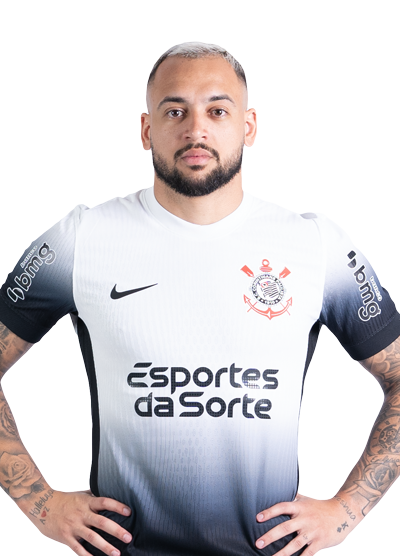

Historia
1910 A fundação
Às 20h30 do dia 1º de setembro, à luz de um lampião, na esquina das ruas José Paulino e Cônego Martins, no bairro do Bom Retiro, o grupo de operários formado por Anselmo Corrêa, Antônio Pereira, Carlos Silva, Joaquim Ambrósio e Raphael Perrone fundaram o Sport Club Corinthians Paulista. Com mais oito rapazes, foi formada a reunião dos primeiros integrantes e sócio fundadores do Timão, que teve seu nome inspirado na equipe inglesa Corinthian Football Club, que fazia excursão pelo Brasil. O presidente escolhido por eles foi o alfaiate Miguel Battaglia, que, já no primeiro momento, afirmou: “O Corinthians vai ser o time do povo e o povo é quem vai fazer o time”. Um terreno alugado na Rua José Paulino foi aplainado, virou campo e foi lá que, já no dia 14 de setembro, o primeiro treino foi realizado diante de uma plateia entusiasmada, que garantiu: “Este veio para ficar!”.

1914 O primeiro título
Primeiro título do Sport Club Corinthians Paulista. Com 10 vitórias em 10 jogos disputados, o Timão marcou 37 gols e venceu a última partida por 3 a 0, contra o Lusitano, no Parque Antártica. O atacante Neco foi o artilheiro do torneio com 12 gols. O Alvinegro conquistou o Campeonato Paulista com uma rodada de antecedência. No dia 08 de novembro, a equipe derrotou o Campos Elyseos por 4 a 0 e sagrou-se campeã com a seguinte escalação: Aristides, Fúlvio e Casemiro González; Police, Bianco e César Nunes; Américo, Peres, Amílcar, Apparício e Neco.
Títulos
Campeonato Paulista
31 Titulos
Anos das conquistas 1914, 1916, 1922, 1923, 1924, 1928, 1929, 1930, 1937, 1938, 1939, 1941,
1951, 1952, 1954, 1977, 1979, 1982, 1983, 1988, 1995, 1997, 1999, 2001, 2003, 2009, 2013,
2017, 2018, 2019 e 2025.
Brasileirão Serie A
7 Títulos
Anos das conquistas 1990, 1998, 1999, 2005, 2011, 2015, 2017.
Copa do Brasil
3 Títulos
Anos das conquistas 1995, 2002, 2009

Libertadores
1 Título
Ano da Conquista 2012
Mundial de Clubes
2 Títulos
Anos das conquistas 2000, 2012
Idólos
-
Sócrates
Líder da Democracia Corinthiana, foi um ícone dentro e fora de campo, conhecido por sua inteligência e habilidade
-
Marcelinho Carioca
Um dos maiores ídolos do clube, conhecido como "Pé de Anjo", marcou muitos gols e conquistou títulos importantes
-
Cássio
Um dos goleiros mais importantes do Corinthians, que defendeu o clube por muitos anos e conquistou diversos títulos.
-
Luizinho
Um dos maiores jogadores da década de 1950, conhecido por sua habilidade com a bola e seu amor pelo Timão.
-
Roberto Rivellino
Um dos jogadores mais marcantes da história do clube, conhecido por sua habilidade e talento.
-
Ronaldo Giovanelli
Um dos goleiros mais importantes da história do Corinthians, que defendeu o clube por muitos anos e conquistou diversos títulos.
-
Cláudio Christóvam
Gols: 306
Jogos: 551
Gols por jogo: 0.56
-
Baltazar
Gols: 269
Jogos: 405
Gols por jogo: 0.66
-
Teleco
Gols: 257
Jogos: 250
Gols por jogo: 1.03
-
Neco
Gols: 242
Jogos: 297
Gols por jogo: 0.81
-
Marcelinho Carioca
Gols: 206
Jogos: 433
Gols por jogo: 0.48
-
Hugo Souza
M. Donelli

Felipe Longo
André Ramalho
Cacá
Felíx Torres
Gustavo Henrique
João Pedro
Renato
Diego Palacios
Hugo
Léo Mana
Matheuzinho
Mateus Bidu
Alex Santana
Anré Carrillo
Breno Bidon
Charles
José Martínez
Ryan
Maycon
Raniele
Igor Coronado
Rodrigo Garro
Giovane
Héctor Hernández
Kayke
Memphis
Angel Romero
Talles Magno
Yuri Alberto